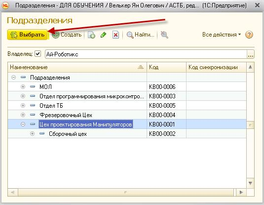

Выдача средств защиты по ведомости
Чтобы произвести выдачу средств защиты сотруднику по ведомости, зайдите в раздел «Выдача», документ «Выдача средств защиты по ведомости», а затем нажмите кнопку «Создать».
Для формирования таблицы нажмите кнопку «Заполнить»
В выпадающем меню выберите нужный пункт
В таблицу попадут все сотрудники привязанные к выбранному складу
Откроется окно выбора сотрудников, Вы можете выбрать одного сотрудника выделив строку содержащую его ФИО, либо несколько конкретных сотрудников, зажав на клавиатуре ctrl или shift, либо сразу всех сотрудников нажав на клавиатуре crtl + A (выделить всё).
Определившись с выбором сотрудников нажмите кнопку «Выбрать».
Таблица заполнится по конкретно выбранным сотрудникам.
Откроется окно «Затрат по местам возникновения». Вы можете выбрать одно из МВЗ по которому будет формироваться таблица. Выбрав МВЗ нажмите кнопку «Выбрать»
Таблица будет заполнена по всем привязанным к выбранному МВЗ сотрудникам.
4. По подразделению
Откроется окно «
Подразделения». Вы можете выбрать одно из подразделений по которому будет формироваться таблица. Выбрав Подразделение нажмите кнопку «Выбрать».
Таблица будет заполнена сотрудниками, которые работают в конкретном выбранном подразделении.
5. По головному подразделению
Откроется окно «Подразделения», Вы можете выбрать одно из подразделений по которому будет сформирована таблица. Также как и в заполнении по «Подразделению», однако помимо сотрудников работающих в конкретном подразделении, подтянутся ещё сотрудники, которые работают в подразделениях подчиняющихся выбранному. Выбрав Подразделение нажмите кнопку «Выбрать».

Примечание:
В эту таблицу попадут только те «Нормы выдачи», у которых в Поле «Вид расчёта» установлен «До износа». Если будет указана периодичность выдачи, то автоматом в колонке «Количество» будет проставлено значение, если периодичность не указана, то количество придётся вводить вручную, в случае когда в норме выдачи указана периодичность выдачи и флажком отмечено «Учитывать в потребности», то такая норма выдачи с видом расчёта «До износа» не попадёт в документ «Выдача средств защиты по ведомости» т.к. она учитывается в потребности.
После выбора способа заполнения таблицы будет сформирован список СИЗ с видом расчёта «До износа», полагающихся сотруднику(ам) по нормам выдачи на данный месяц.
Укажите количество выдаваемых номенклатур выдачи.
Описание столбцов:
2.
Норма выдачи - наименование нормы с указанием периодичности выдачи.
4.
Номенклатура выдачи - изделия, подобранные программой в соответствии с документом соответствий номенклатуры выдачи.
6. Количество - фактическое количество выданных СИЗ
Командная строка данной формы содержит следующие кнопки:
– добавление копированием. В документе выдачи добавление строк возможно только с помощью данной кнопки;
– удаление выбранных строк;
– переместить текущий элемент вверх.
– переместить текущий элемент вниз.
Завершение выдачи:
Когда таблица сформирована, нажмите «Провести и закрыть» или «Провести», если после провода документа Вам сразу же нужно будет распечатать Ведомость на выдачу СИЗ.
Печать ведомости:
Если необходимо распечатать ведомость на выдачу СИЗ, нажмите на кнопку печати «Ведомость на выдачу СИЗ»
Неподобранная номенклатура
При формировании документа выдачи средств защиты в нем могут появиться пустые строки. Ниже будут рассмотрены ситуации, при которых номенклатура не может быть подобрана.
Пустой список выдачи
После выбора организации, склада и сотрудника, при нажатии кнопки «Заполнить», таблица остается пустой.
Возможные причины
Сотруднику на данный момент не положены СИЗ.
Способ решения: обратитесь к графику выдачи СИЗ в личной карточке сотрудника. График выдачи СИЗ отражает всю номенклатуру, которая полагается сотруднику с указанием даты потребности.